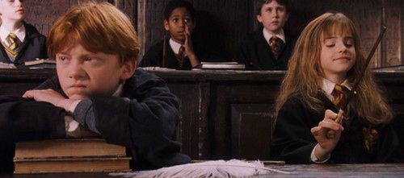
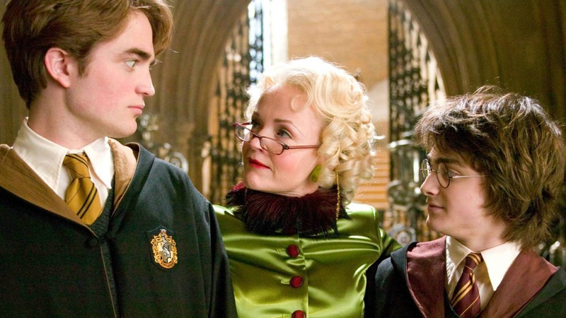
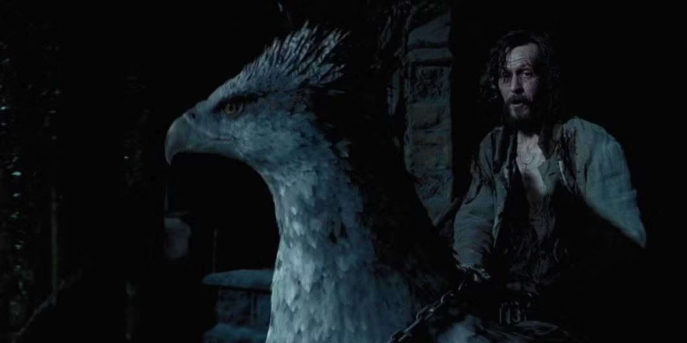

The Best Movies Of All TimeAn Opinion PieceExperienced reader of the Harry Potter series Updated: Feb 23, 2025 3. Harry Potter and the Philosopher's StoneFirstly, I want to mention the fact that I haven't finished all of the Potter films. But, I am already in love with them and will definitely be rewatching. The moment they introduced me to the magical world of wizarding, I started daydreaming about the day I would receive my Hogwarts letter. This movie will always have a special place in my heart because it was so beautiful and enchanting. I love the ending so much. It was so innocent and bright and it made me forget all about my depressions of the world. Whenever I feel stressed, watching Harry Potter always makes me feel better. 2. Harry Potter and the Goblet of FireThis is actually the first Harry Potter film I watched, even though it was the fourth in the series. I wanted to watch this because at the time, I was in a Twilight phase and I liked the actor that played Edward Cullen in the Twilight series (Robert Pattinson), but keep in mind that I only liked Twilight to hate on it. The movie itself made a lot more sense after reading the books. I enjoyed watching the Triwizard Tournament unfold. Despite the length of this movie being almost 3 hours long, I was pleasantly surprised to find that I was entertained throughout the entire movie. 1. Harry Potter and the Prisoner of AzkabanObviously the best. No other movie--Harry Potter movies included--can compare to this masterpiece. The plot twists were so good and unexpected and especially at the end, there was a huge reveal that changed the entire story. There was so much character development, and a lot of things happened. This was a shorter movie, but it was done so well. They managed to squeeze in the whole story in only 2 hours. They did change one part of the plot, but I think doing that was really smart, because it made it easier for the audience to understand what was going on. Prisoner of Azkaban was filled with emotions, twists, and drama. ConclusionAs you can probably see, I think the Harry Potter movies were all done extremely well. It is one of the best, if not the best, book to movie adaptations I have ever seen. I do not know how I thought that the Twilight movie franchise could even compete with the Harry Potter franchise. All the actors were amazing and it made me want to jump in to the movie. I now have Hogwarts robes, $70 wands, and ties, and I am awaiting my acceptance letter. Home |